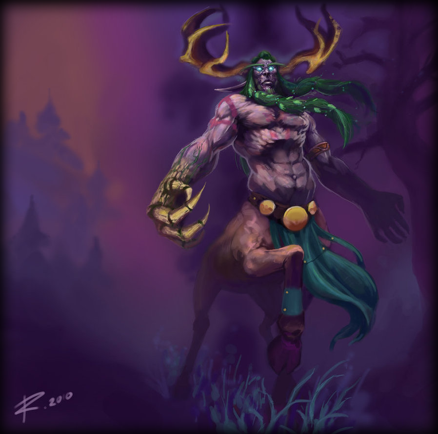
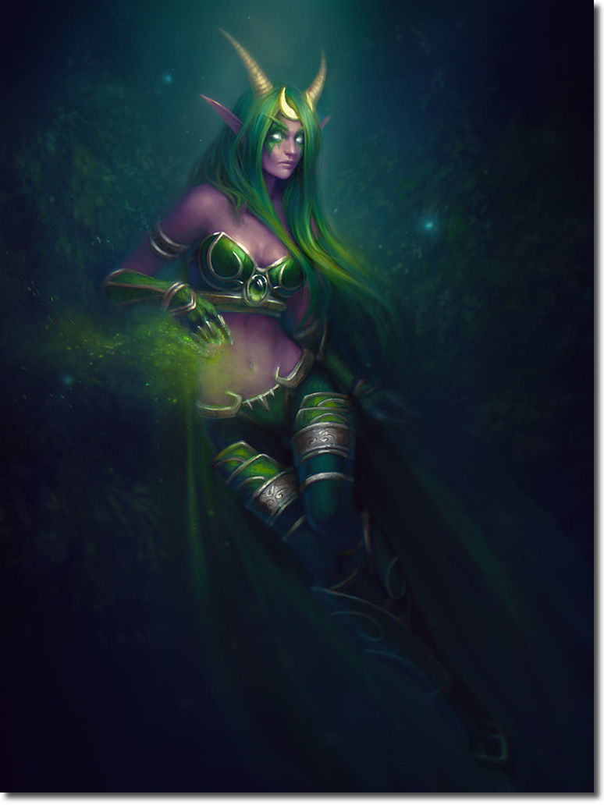
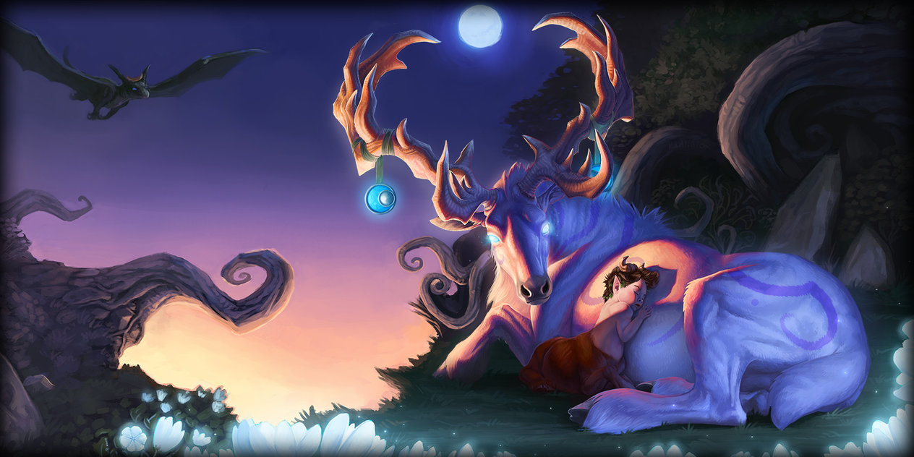
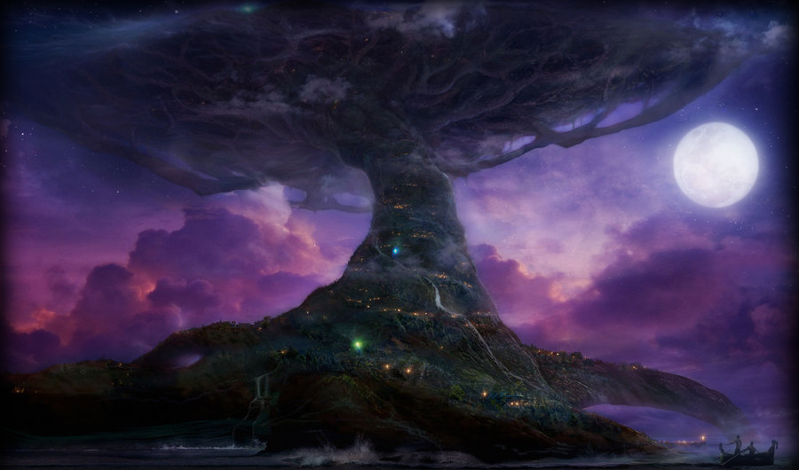

Azshara and her highborne were prepared for them, and her chaotic magics ripped Malfurion's forces to shreds. But it was the sight of Tyrande falling to the hands of Azshara's former Highborne, now transformed into satyrs that gave Malfurion the strength for one final strike.
Azshara's battle with Malfurion threw the portal out of its magical alignment, and the vortex grew unstable. Malfurion cast a spell to create a gigantic gale that would rip all the demons from the ground and send them on a one-way trip into the Well and to the Twisting Nether. The Well of Eternity then started to collapse on itself, pulling land, Azshara's palace and the ruined city of Zin-Azshari into itself. Although Sargeras knew that the portal was closing, he tried to do the unthinkable - step into the portal to recreate it and enter Azeroth. The portal finally collapsed and trapped Sargeras in it. The Well of Eternity exploded in a catastrophic eruption that left the world sundered forever.
However, Malfurion survived. Constructing crude rafts and sailing to what would become Kalimdor, Malfurion, Tyrande, and Cenarius agreed to lead their people to a new home.
To their horror, however, a lake atop Mount Hyjal had become fouled by the magical energies of the Well of Eternity, which they had hoped was gone forever. Illidan, who had sought to preserve the arcane magic he was addicted to, had taken seven vials of the Well's waters and poured three of them into the lake, creating a new Well of Eternity. Knowing that Illidan's addiction to magic would always be a threat to the safety of the world, Malfurion imprisoned his brother in the caverns below Hyjal; the Barrow Deeps. However, with the Sundering still fresh in their minds, Malfurion and the night elves dared not attempt to destroy the new Well.
Seeking the counsel of the Aspects, Malfurion requested the presence of Alexstrasza, Ysera, and Nozdormu, returned from their hiding places, and they were shocked to hear of the new Well. All of them suspected that the Burning Legion would sniff out its energies once again and find Azeroth a second time.
Malfurion agreed, and they all decided to safeguard this Well. To this end, they created the World Tree, Nordrassil, which they pledged to use to protect the Well of Eternity and the night elves themselves. Alexstrasza, the Life-Binder, grew the tree herself from an enchanted acorn of G'Hanir. Nozdormu, the Timeless, placed an enchantment upon the tree: for as long as it stood, the night elves would never die of old age or sickness. Ysera, the Dreamer, linked Nordrassil to the Emerald Dream. Through the tree, she would slowly rebuild the world. However, to maintain the Emerald Dream, she needed consciousnesses to roam its eternal pathways. To sustain it, all the druids agreed to sleep for centuries at a time, despite the years they would lose, and be linked to the Emerald Dream forever.
Malfurion and Tyrande helped their people rebuild their society amongst the forests of Ashenvale surrounding Hyjal. Cenarius taught them the ways of the wood, and Malfurion grew considerably in power as he learned the art of the druid, and he became a great Archdruid, first among his people.
Though he dearly wished to remain with Tyrande, Malfurion and his druid kindred slept peacefully for many years until they were awakened by an attack by Dath'Remar and the Highborne survivors. He was quickly routed, but the druids refused to destroy them with so many lives already lost, so Malfurion decided that the Highborne were to be exiled. Dath’remar and his followers would later become the high elves. Though it pained his heart beyond belief, Malfurion left Tyrande to rejoin the Emerald Dream, settling into his long sleep in Stormrage Barrow Dens on the Moonglade Island.
At times, it is hinted that Malfurion and the other druids were asleep for all ten millenia between the War of the Ancients and the Third War, awakening only in times of great peril. However, most sources agree that there was a cycle, and that the druids would awaken every few centuries to interact with their wives, sisters, and daughters. This cycle could be easily interrupted if needed, but the druids must return to the Dream at the earliest opportunity.
Third War
Ten thousand years later the second coming of the legion pushed Tyrande to reawaken the druids. After battling through the three enchanted keepers of the grove — Lightning Protector, Fire Protector, and Ice Protector — she reached the Horn of Cenarius. Malfurion was awakened to the sound of the Horn of Cenarius. He could sense the corruption and decay of his land, even in the Emerald Dream, and when he awoke, he summoned treants from the forest to dispose of the undead invaders who were closing on his Den.
Tyrande, responsible for his awakening, told him that Archimonde had returned to Kalimdor, and he had brought the Burning Legion with him. Malfurion immediately knew what the warlock was after; he would assail Mount Hyjal, and attempt to drain the mystical energies of Nordrassil. Their mission was clear: they had to awaken the druids and stop Archimonde.
When Malfurion saw the outlander races battling the undead, he thought that perhaps they would make good allies in the coming conflict. But Tyrande immediately rejected the idea, stating that they had killed Cenarius, and deserved whatever fate the undead had in store for them.

This savage nature became more prevalent as they attempted to awaken the druids of the talon, sleeping in the Druid of the Talon's Barrow Dens in Winterspring. Tyrande found a group of furbolgs, whom she had tried to help in Ashenvale, and who were now corrupted by the darkening shadow. Tyrande's forces killed them all. They fought their way through the undead, with orcs and humans fighting them at every turn, until they reached the Barrow Dens, where Malfurion sounded the Horn of Cenarius. The druid of the talon awoke, and pledged to help Malfurion awaken the druids of the claw in the Barrow Deeps of Hyjal.
Upon entering the mountainous caverns, Malfurion and Tyrande discovered gigantic spiders and other creatures, vastly mutated by the evil corruption, even within the sanctity of Hyjal. Soon, they came upon a doorway that led to the halls which held Malfurion's treacherous brother, Illidan. Despite Malfurion's protests, Tyrande entered the prison to free Illidan. Malfurion continued on, and found that the druids of the claw had forgotten themselves, and had embraced their feral bear forms as opposed to their night elven forms. The druids' minds were now identical to those of bears, making them impossible to reason with. But with the Horn of Cenarius, Malfurion broke them free of this state. Grateful to have their minds restored, the druids of the claw agreed to participate in the fight against the Legion.
Meanwhile, Tyrande had released Illidan, hoping that he could also make a significant contribution in the war effort. Still, after all these years, Malfurion refused to trust Illidan for his betrayal. Illidan pointedly reminded Malfurion that they fought the demons together once, but Malfurion was adamant; he would have nothing to do with this.
Illidan took a force of night elves into the corrupted forests of Felwood, and began to battle Tichondrius. Tyrande and Malfurion immediately rushed to reinforce Illidan, but when they arrived, Illidan was already victorious, and in the form of a monstrous demon. Illidan had claimed the powers of the Skull of Gul'dan for his own in order to gain the power to slay Tichondrius. Malfurion and Tyrande both could not believe Illidan's dire choice, and Malfurion banished him from the forests forever. Illidan did not bother to argue with his brother, and left of his own accord.
That night, Malfurion received a vision. A great raven came to him and told him to bring Tyrande to the base of Mount Hyjal. Curious, he did as was instructed, and they met Jaina and Thrall, the leaders of the outlander forces in Kalimdor.
Tyrande rebuked them and was about to battle them when suddenly the raven appeared, revealing himself to be Medivh, the last Guardian of Tirisfal. Medivh convinced the night elves to join forces with the outlanders in a last ditch effort to stop Archimonde's relentless assault towards the world tree. Tyrande reluctantly agreed.
From "The Sacrifice" at Hyjal's summit, where the World Tree and the Well of Eternity rested, Malfurion formed a plan of attack. The defenders quickly built fortifications all the way up the mountain, and prepared for Archimonde's ascent. Malfurion knew what had to be done; in order for Archimonde to be defeated, he had to unleash the powers of the world tree upon the mighty demon lord.
Archimonde, aided by three of his most powerful remaining lieutenants (the lich Rage Winterchill, Azgalor, successor of Mannoroth, and Anetheron, successor of Tichondrius) laid siege to Hyjal, ripping through Jaina and Thrall's bases. Finally, he came to Tyrande's last stronghold, and in turn, tore it to shreds, blew open the enchanted gates, and made his way to the World Tree. Tyrande and Malfurion watched as he approached, heedless of the Ancestral Guardians who had gathered during the battle, at the base of the World Tree. Archimonde's victory over the desperate defenders had made him overconfident, and he was completely unaware of the trap they had set for him.
When Archimonde reached the Tree, Malfurion sounded the Horn of Cenarius. The thousands of Ancestral Guardians, roused by nature herself, stirred from the trees and attacked Archimonde, detonating in an explosion so large it unmade Archimonde and incinerated the forests atop Hyjal, shattering the world tree and ending the night elves' immortality.
Terror of the Tides
While checking on Nordrassil one day after many months from the Battle of Mount Hyjal, Malfurion and Tyrande were unexpectedly met by a runner from Maiev the warden, pleading for assistance against Illidan. The former demon hunter had resurfaced and recruited a race of amphibious snake-people known as naga to aid him in his plans, which had come to include the attempted slaughter of Shadowsong and her troops. Malfurion immediately left with Tyrande to assist them.
Malfurion brought mountain giants with him to aid in the battle, and they battled through hordes of naga to reach Maiev. When they did, she was upset with Tyrande since the priestess had killed many of Maiev's Watcher guards when she freed Illidan. Malfurion stopped the argument between the two women before it broke into a fight and advised them to set aside their personal feud until Illidan was dealt with. They battled fiercely against the naga, until they finally confronted Illidan when he captured Tyrande. But he let her go with a warning not to go after him, and fled before they could apprehend him. They followed him across the sea, and landed on the shores of Lordaeron.
Troubled by the corruption of the forests, Malfurion retreated into the woods to commune with the forest spirits, but commanded Maiev and Tyrande to forget their differences for the time being in his absence during their search for Illidan.
As he went into the woods, Malfurion felt the pain of the earth, and was met by benevolent spirits of the forest who granted him a vision of Northrend, which was crumbling apart due to Illidan's reckless magics with the Eye of Sargeras. Malfurion feared for the world and resolved to stop his brother.

But when he found Maiev, he could not see Tyrande. Maiev sadly reported that Tyrande had fallen in battle, torn apart by the Undead and that because they were chasing Illidan in the First place which caused Tyrande's "Death". Infuriated, Malfurion led his forces against Illidan's naga, and with the help of Maiev and her new ally, Prince Kael'thas Sunstrider, leader of the Blood Elves, they defeated Illidan's forces and captured him. Malfurion accused Illidan of causing Tyrande's death, but Kael chimed in, saying that it was premature to assume her dead, and that she had only been swept down a river into the Undead Lands. Realizing that he had been deceived, Malfurion entangled Maiev with roots and left to look for Tyrande, with Illidan volunteering with his naga to scour the river.
When they found Tyrande, she and a small contingent of Sentinels were desperately battling the undead. Illidan fought to get to her through the river with his naga while Malfurion fended off the undead attackers. Finally, they pushed through the undead forces and Illidan rescued Tyrande.
When Illidan brought Tyrande back to Malfurion, he was grateful. He decided that Illidan had earned his freedom, but Malfurion warned his brother that if he ever threaten the night elves again, he would not be so forgiving. Illidan agreed to those terms, and opened a mystic portal to Outland.
As he retreated, Maiev caught up with them, and furiously chastised Malfurion and Tyrande for allowing Illidan to leave. In a rage, she and her Watchers followed Illidan into his portal. Tyrande tried to stop her, but Malfurion let her go, knowing that nothing they could say would change her mind.
With a heavy sigh, Malfurion and Tyrande left to return to their own realm and people, for there was still work to be done.
Afterwards
Malfurion Stormrage stands as both prophet and savior to his people. Some time after returning to Kalimdor alongside Tyrande, he learned that a number of night elves were planning to create a new World Tree in the hopes of regaining their lost immortality. Malfurion warned against it, arguing that nature would never bless such a selfish act. Shortly after that, Malfurion returned to the spirit realm known as the Emerald Dream, to replenish his powers after the events of the Second Invasion of the Burning Legion.
Recently, something went wrong with Malfurion's dreamstate. Now he is trapped somewhere within the Dream, beyond even the reach of the green dragons who control it. In-game quests and events indicate he is fighting alongside Cenarius's spirit against the Nightmare. Whether he does not return by choice or because he has been made Unwaking by the Nightmare is unknown. What is known is that with Malfurion lost, the night elves continue to stumble blindly into darkness...
After speaking with the druids in Moonglade, Brann Bronzebeard was given an explanation behind the mysterious circumstances of Malfurion's coma — that someone actually attacked Malfurion. "An unknown assailant recently did something to the famed leader of the druids, Malfurion Stormrage, and he has been in some sort of catatonic state ever since. With the knowledge that the Cenarion Circle has an enemy powerful enough to incapacitate their leader, the druids have become increasingly worried and suspicious. After speaking with some of the druids here, I learned some unusual — and unsettling — facts."Brann believes that whatever did this may be one of the most powerful entities in the world. "Prime suspects are Remulos and Fandral Staghelm, since they are the only druids powerful enough to potentially sabotage Malfurion’s efforts in the Emerald Dream; but perhaps the betrayer wasn’t a druid at all."

With Malfurion missing, Arch Druid Fandral Staghelm took over the leadership of the druids, convincing the Circle of Ancients in Darkshore that it was time for the elves to rebuild, and that it was time for them regain their immortality. With the approval of the Circle, and over the objection of a number of other groups, Staghelm and the most powerful druids grew Teldrassil, the new World Tree.
The details of Malfurion's condition were a state secret. Only the highest-ranking members of the Cenarion Circle and the Sisterhood of Elune were aware of it.
In the novel, Stormrage, it is revealed that Malfurion has been captured in the Emerald Dream and is being tortured and used by the Nightmare Lord for the purpose of conquering both the Emerald Dream AND Azeroth. The Nightmare Lord was the ruler of the Emerald Nightmare, the terrible plague that covers the Emerald Dream, and later revealed to really be Malfurion's old enemy Xavius. With the help of Tyrande Whisperwind, Broll Bearmantle, the dragon aspects Ysera & Alexstrasza, King Varian Wrynn, and host of others, Malfurion was able to escape the clutches of the Nightmare and return to the physical plane of Azeroth for the first time since the Third War. With the help of his comrades he was able to stop the Nightmare Lord and put an end to the threat of the Emerald Nightmare. At the same time, Malfurion discovered the cause of Teldrassil's corruption and removed it, enabling the tree to become the haven and monument it was meant to be.
After the threat of the Nightmare was stifled, Malfurion and Tyrande Whisperwind took time to finally relish that they were together once again. Without wasting any time and with the blessings of Ysera & Alexstrasza, well wishes from the leaders of the Alliance and even Thrall of the Horde, the two were finally married in the capital city of the Night Elves, Darnassus.